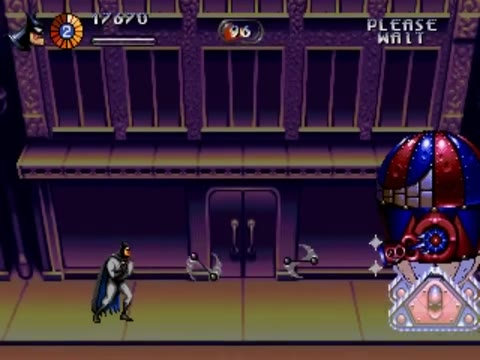

Section 1 : rues de Gotham & machine d'Harley
On assemble enfin un vrai morceau du niveau : la rue à balcon, l'explosion scriptée de la banque qui fait basculer l'ambiance, puis le premier boss en trois phases.



Une classe pour toutes les sections
Les trois sections partagent la même mécanique : fondu d'entrée, gestion de la mort du joueur, fin sur un boss, puis passage à la suite. On la factorise :
SceneFlow est écrit en entier au tome 10. En attendant, cette version minimale suffit (Autoload « SceneFlow », déclaré après PaletteFx) :
Les fondus sont gérés à un seul endroit : SceneFlow. Si chaque section faisait aussi ses propres fondus, on obtiendrait des doubles fondus ou des écrans qui « reclignotent ». Règle générale : un effet global appartient à un seul propriétaire.
La scène s1_streets.tscn
S1Streets (Node2D, section.gd) next_scene = s2_gem_expo.tscn ├── Background (CanvasLayer, layer = -10) │ └── Facade (ColorRect) facade_raster.gd + raster_plane.gdshader (tome 06) ├── World (Node2D) │ ├── Ground (StaticBody2D) couche 1, sol sur toute la longueur, y = 208 │ ├── Balcony (StaticBody2D) couche 2, one-way, y = 112, avec des trous │ ├── Ledges (Node2D) des Area2D couche 8 sous chaque tronçon de balcon │ ├── Props (Node2D) poubelles (Breakable + WeaponPickup), crânes │ ├── Fires (Node2D, caché) Sprite2D fire.gd devant les fenêtres de la banque │ ├── ArenaA … ArenaD (WaveArena) │ ├── BankEvent (Area2D) bank_event.gd │ └── BossArena (Area2D) boss_arena.gd → HarleyMachine │ └── HarleyMachine ├── EnemyBullets (Pool) groupe « enemy_bullets », scene = enemy_bullet.tscn ├── Player (player.tscn) groupe « player » ├── Camera (Camera2D, camera_rig.gd) target = Player │ └── Debris (CPUParticles2D) papiers et billets, émis après l'explosion └── HUD (hud.tscn, tome 10)
Le découpage de la rue
À ~117 px/s, chaque seconde de vidéo correspond à environ 117 px de rue. Le découpage suivant est donc approximatif : ajuste-le en jouant.
| Repère vidéo | X approx. | Contenu |
|---|---|---|
| 1:46 | 0–320 | Départ, poubelles, premier bonus d'arme |
| 1:52–2:25 | ~480 | Arène A : clowns du balcon et de la rue (2 vagues) → GO! |
| 2:27 | ~700–1000 | Couloir : tireurs, crâne ; la façade de la banque apparaît |
| 2:44 | ~1100 | Événement de la banque (ci-dessous) |
| 2:51–3:18 | ~1300 | Arène B : costauds au sac, sbires roses → GO! |
| 3:20–3:37 | ~1650 | Arène C : mélange, tireurs sur le balcon → GO! |
| 4:06–4:42 | ~2200 | Arène D : acrobates, lance-flammes → GO! |
| 4:44 | ~2500–2700 | Rue vide, puis BossArena |
Arène (tension, écran figé) → couloir (détente, on avance) → arène… Le joueur respire entre deux combats, et l'apparition d'un nouvel ennemi ou d'un bonus dans un couloir est d'autant plus lisible. Quand tu places tes arènes, garde cette alternance.
L'explosion de la banque
2:44 : explosions en chaîne à l'étage → 2:46–2:48 : écran blanc → 2:49 : explosions → 2:50 : la palette a changé (violet et ocre), des flammes géantes sortent des fenêtres, des débris tombent en continu jusqu'au boss.
Changer d'un coup tout le décor serait brutal. Le blanc plein écran sert de rideau : pendant qu'on ne voit rien, on change la palette, on active les feux et on lance les débris. Quand le blanc retombe, le monde a changé et le cerveau du joueur l'accepte comme la conséquence de l'explosion.
On voit un écran blanc sur trois images échantillonnées à une seconde d'intervalle : il peut s'agir d'un blanc continu ou d'un clignotement rapide. Le code donne un blanc franc suivi d'un retour par paliers ; vérifie dans un émulateur. Pour une bascule plus fidèle encore, utilise la façade indexée et indexed.gdshader du tome 06, et anime blend_step de 0 à 7 sous le flash.
Pour les débris : un CPUParticles2D enfant de la caméra, émetteur en rectangle de 320×4 au-dessus de l'écran (emission_shape = Rectangle), gravity (0, 30), lifetime 6 s, une petite texture de papier, et une rotation aléatoire.
Une base pour les trois boss
Les trois boss du niveau partagent : une vitalité affichée de 99 à 00, un démarrage déclenché par une arène, une séquence de mort et des points.
call_group, le message à qui veut l'entendreLe boss ne sait pas si un HUD existe. Il « crie » show_boss à tous les nœuds du groupe hud. S'il n'y en a aucun (scène de test), rien ne se passe et rien ne plante. C'est un découplage encore plus fort que les signaux.
Le boss 1 : la machine d'Harley
Les trois phases
| Phase | Vitalité | Partie vulnérable | Attaque | Mouvement |
|---|---|---|---|---|
| A · complète | 99 → 66 | Capsule et canon | Salves de 4 boules en arc, canon qui balaie de l'horizontale à la verticale | Glisse de gauche à droite |
| B · capsule | 66 → 33 | Capsule | Canon qui tourne à 360°, salves plus fréquentes | Plus rapide |
| C · Harley | 33 → 0 | Harley seule | Bombes lobées sur Batman | Mât télescopique qui monte au niveau du balcon |
- Phases liées à des seuils de vie : le combat évolue et le joueur sent sa progression.
- Transition spectaculaire (explosion, pièce qui saute) et brève invincibilité pendant la transition.
- Point faible qui se déplace : en phase C, il faut monter sur le balcon pour atteindre Harley. Le décor devient un élément du combat.
- Lisibilité : le canon pointe là où il va tirer. C'est la télégraphie.
HarleyMachine (Node2D, harley_machine.gd) score_value = 5000 ├── Health max_health = 99 (À CALIBRER) ├── Base (Node2D) socle rose à pointes │ └── Sprite2D ├── Capsule (Node2D) dôme rayé + corps │ ├── Sprite2D matériau hit_flash │ ├── Hurtbox couche 6 · health = ../../Health │ │ └── CollisionShape2D │ └── Cannon (Node2D) pivot du canon │ ├── Sprite2D │ └── Muzzle (Marker2D) bout du canon ├── Crown (Sprite2D, caché) couronne bleue « en pétales » ├── Mast (Node2D, caché) │ ├── Pole (Sprite2D) tube gris, région étirée en hauteur │ └── Harley (Node2D) │ ├── Sprite2D Harley dans son fauteuil │ └── Hurtbox couche 6 · health = ../../../Health └── HitFlash (HitFlash) target = Capsule/Sprite2D
Ajoute la fonction de tir balistique à la classe Fx :
Pour qu'une bombe lobée tombe sur Batman, on fixe la durée du vol et on résout l'équation du mouvement pour la vitesse de départ. Changer time donne des lobes plus tendus ou plus hauts, sans toucher au reste.
Vitalité (99 points de vie, donc 99 batarangs de niveau 1), cadence des salves et vitesses des boules sont des hypothèses. Les seuils 66 et 33 découpent le combat en trois tiers, ce qui correspond aux durées observées (~35 s, ~38 s, ~18 s).
- La section apparaît par un fondu en 8 paliers (via
SceneFlow) ; les arènes s'enchaînent avec leurs « GO! ». - À la banque : explosions, écran blanc, puis rue en feu, flammes ondulantes, papiers qui tombent.
- Le boss glisse, tire des arcs de boules, perd son socle à 66, son dôme à 33, puis Harley monte sur son mât.
- À 00 : explosions, pose de victoire, +5 000, fondu, chargement de la section 2.